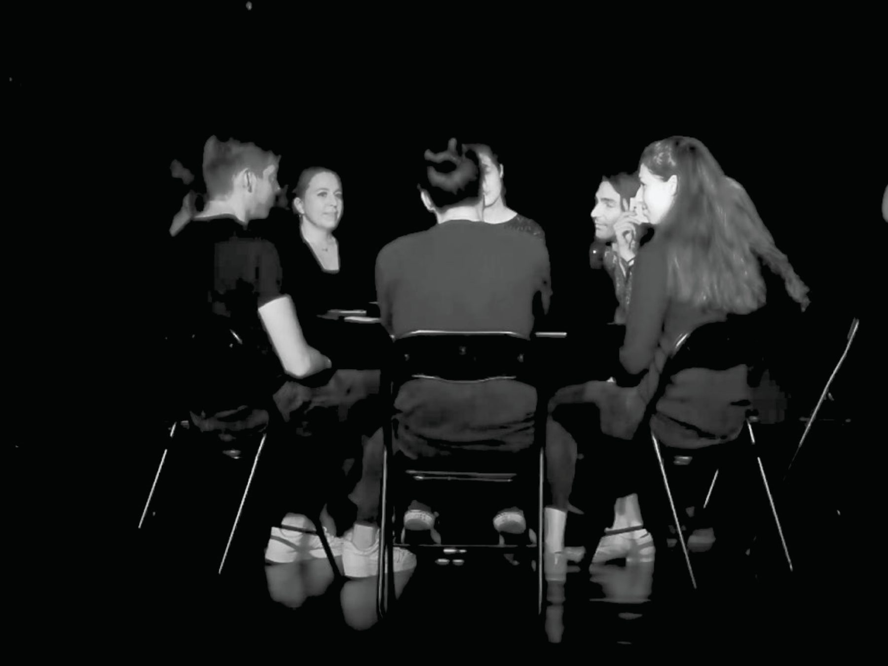
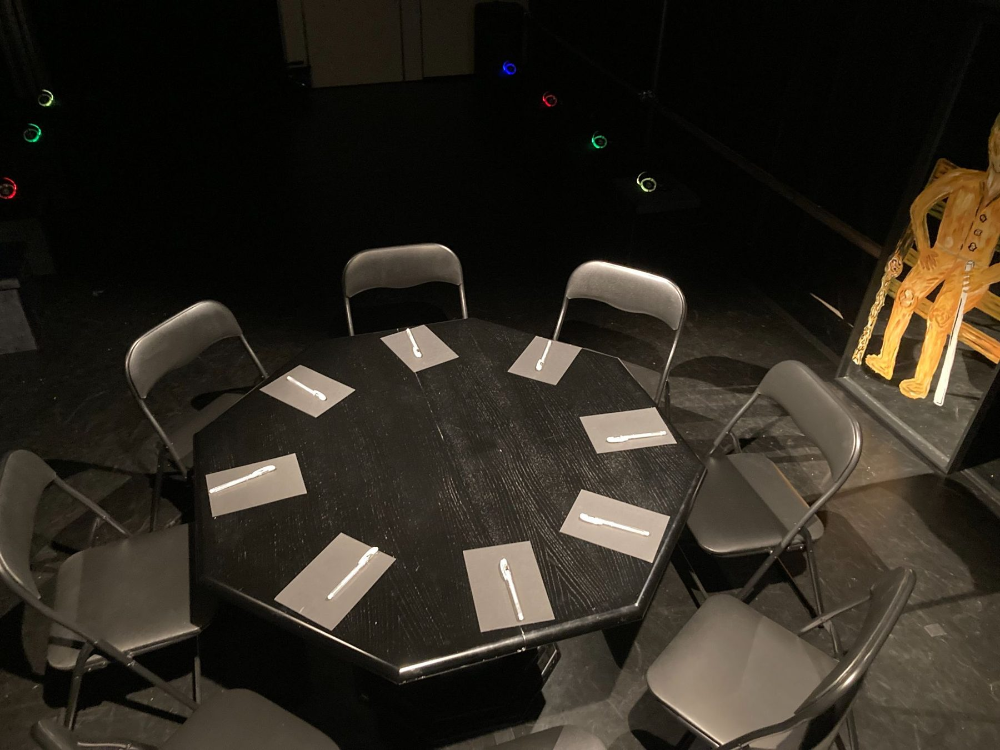
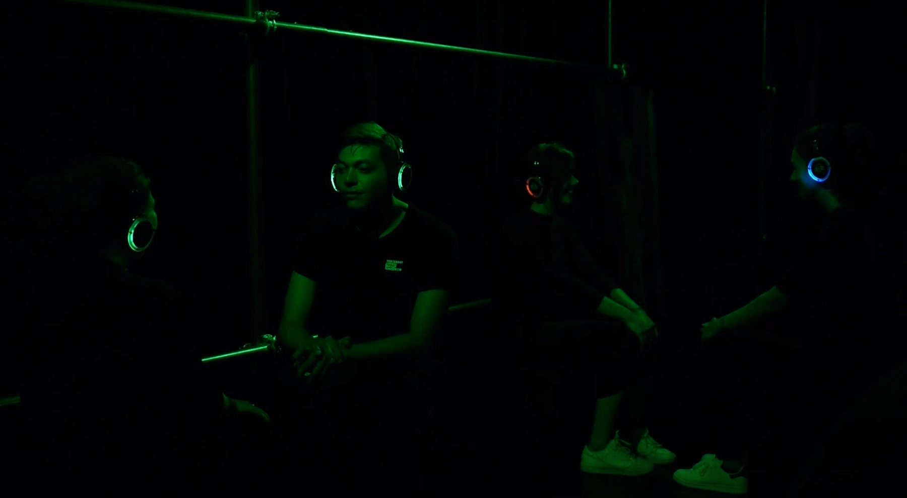
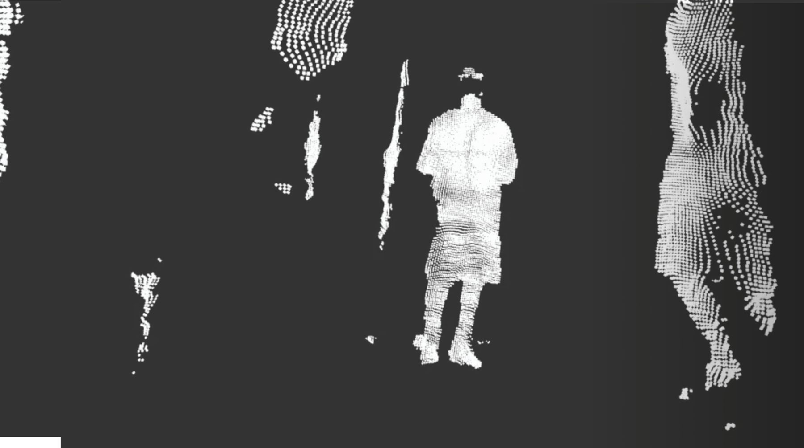
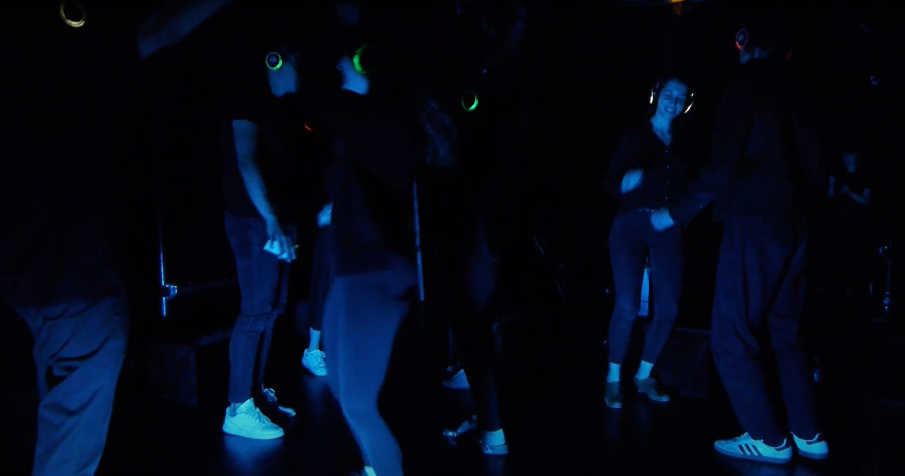

Qualia
We come to know things in different ways. But what can only be known by experiencing?
QUALIA is an immersive and participative performance in which the audience is invited to explore the feeling of doing. Each participant delves into a specifically designed space, questioning the importance of first-hand experiences while applying different ways of communication.
A group of strangers tries to share what they perceive, in words and without them, and discovers how far one mind can reach another. Someone else in the room is trying too.
Created and PremieredResidency at La Générale, Paris (2021)
Presented5th Tel Aviv International Theatre Festival (2023)




